PHẦN 1: CẦM VỢT, THUẬN TAY & TRÁI TAY CỦA CÁC HUYỀN THOẠI
— Jack Kramer & Ken Rosewall (Tennis Strokes and Strategies)
Lời Dẫn Nhập: Tuyển Tập Bậc Thầy Từ Tạp Chí Tennis Magazine
Trong suốt kỷ nguyên vàng của quần vợt thế giới, tạp chí Tennis Magazine là tiếng nói uy quyền và sâu sắc nhất về phương pháp giảng dạy kỹ thuật và chiến thuật đỉnh cao. Tuyển tập Tennis Strokes and Strategies (do nhà xuất bản Simon and Schuster phát hành) là một công trình đồ sộ mang tính lịch sử: lần đầu tiên, những bộ óc vĩ đại nhất của làng banh nỉ thế giới cùng tề tựu trong một tác phẩm để chia sẻ trực tiếp những bí mật kỹ thuật của riêng mình.
Từ cú thuận tay sấm sét của Jack Kramer, cú trái tay cắt bóng tuyệt mỹ của Ken Rosewall, cú trái tay tấn công của Don Budge, cho đến khẩu pháo giao bóng Cannonball của Arthur Ashe và cú lốp bóng topspin của Rod Laver — mỗi chương sách là một bài giảng thực chiến vô giá được chắt lọc từ hàng chục năm kinh nghiệm thi đấu đỉnh cao tại các đấu trường Grand Slam.
Chương 1: Khoa Học Về Cán Vợt & Kích Cỡ Cầm Chuẩn Y Khoa
Tiến sĩ Robert P. Nirschl — bác sĩ phẫu thuật chỉnh hình thể thao lừng danh nước Mỹ — mở đầu cuốn sách bằng một phân tích y học giải phẫu then chốt về cách lựa chọn kích thước cán vợt:
Kích Cỡ Cán Vợt Theo Giải Phẫu Học
Sử dụng thước đo khoảng cách từ nếp gấp ngang thứ hai của lòng bàn tay đến đầu ngón tay đeo nhẫn. Kích cỡ cán vợt phải trùng khớp chính xác với khoảng cách này để cơ bắp bàn tay không phải gồng siết quá mức khi tiếp xúc bóng.
Nguy Cơ Từ Cán Vợt Quá Nhỏ
Cán vợt quá nhỏ khiến cây vợt bị xoay vặn trong tay khi chạm bóng lệch tâm, buộc người chơi phải bóp nghẹt cán vợt. Đây là nguyên nhân trực tiếp dẫn tới 80% các ca viêm gân lồi cầu ngoài xương cánh tay (Tennis Elbow).
Độ Chắc Chắn Của Cổ Tay
Theo huấn luyện viên Fred Weymuller, độ chặt khi cầm vợt nên thay đổi linh hoạt: thư giãn ở mức 3/10 khi chuẩn bị và siết chặt lên mức 8/10 ngay tại mili-giây tiếp xúc bóng để đảm bảo mặt vợt không bị biến dạng.
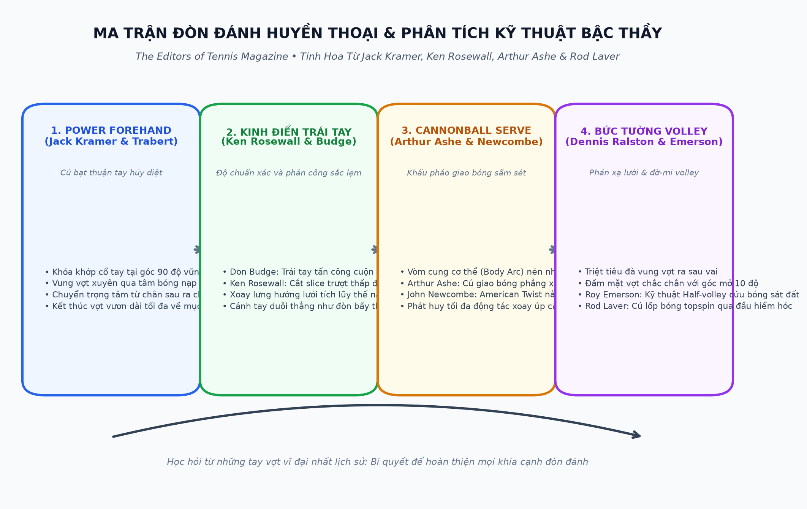
Chương 2: Cú Thuận Tay Sấm Sét Của Jack Kramer & Tony Trabert
Huyền thoại Jack Kramer — người sáng lập kỷ nguyên quần vợt chuyên nghiệp — phân tích giải phẫu cú Power Forehand mang thương hiệu của ông:
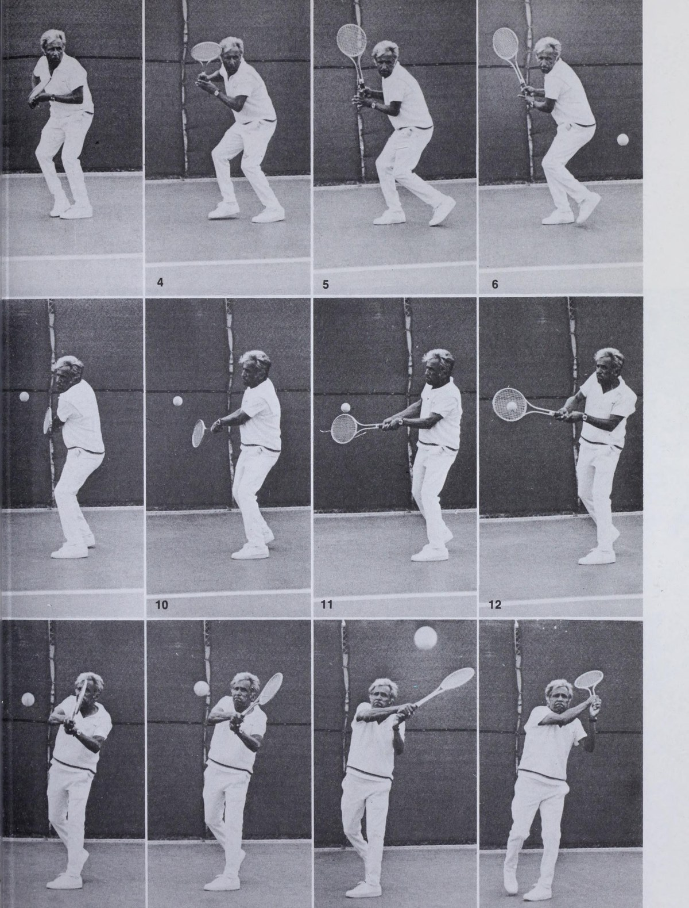
| Thành Phần Kỹ Thuật | Chỉ Dẫn Bậc Thầy Của Jack Kramer & Tony Trabert | Hệ Quả Thực Tế Lên Đường Bóng |
|---|---|---|
| Đà đưa vợt ra sau (Backswing) | Đầu vợt vẽ một vòng cung cao ngang vai, giữ cánh tay gập nhẹ thoải mái, lòng bàn tay hướng chếch xuống mặt sân. | Tích lũy trọn vẹn động năng tự nhiên mà không làm căng thẳng các cơ vai hay cổ tay. |
| Điểm tiếp xúc bóng (Contact Zone) | Gặp bóng tại vị trí cách hông trước 30-40cm, cổ tay khóa chặt ở góc 90 độ so với cẳng tay, mặt vợt vuông góc tuyệt đối với mục tiêu. | Truyền tải 100% lực đẩy từ khối lượng cơ thể xuyên thẳng qua tâm quả bóng, tạo độ nặng tối đa. |
| Đà dẫn bóng xuyên suốt (Follow-Through) | Chuyên gia Bill Price nhấn mạnh: kéo dài mặt vợt đi xuyên qua đường bay của bóng ít nhất 60cm trước khi kết thúc cao qua vai trái. | Giữ bóng nằm trên mặt lưới lâu hơn, tăng cường độ chuẩn xác và kiểm soát chiều sâu tuyệt hảo. |
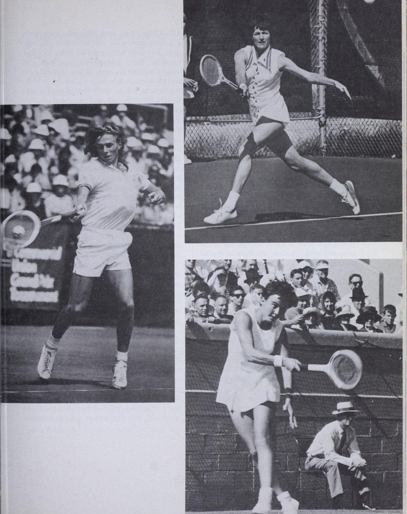
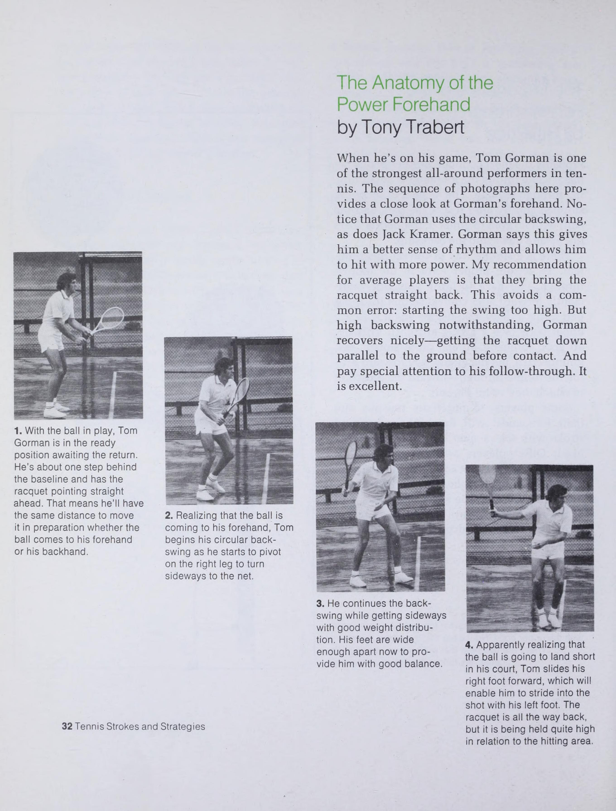
Chương 3: Nghệ Thuật Cú Trái Tay: Don Budge & Ken Rosewall
Trong lịch sử quần vợt, Don Budge là người sở hữu cú trái tay tấn công mạnh nhất, trong khi Ken Rosewall là bậc thầy vĩ đại nhất của cú trái tay cắt bóng (Backhand Slice):
- Trái tay tấn công của Don Budge: Budge sử dụng kiểu cầm Miền Đông trái tay, xoay lưng sâu về phía đối thủ, hạ đầu vợt thấp hơn bóng và vuốt bóng từ dưới lên với độ xoáy topspin uy mãnh. Cú đánh này cho phép ông tung ra những cú passing shot xuyên thủng mọi hàng phòng ngự trên lưới.
- Cú cắt bóng như dao mổ của Ken Rosewall: Rosewall giữ cổ tay hoàn toàn bất động, đưa vợt từ trên cao xuống và trượt mặt vợt xuyên qua đáy quả bóng. Quả bóng bay là là cách mép lưới vài centimet và trượt sát mặt đất khi nảy, biến đối thủ thành nạn nhân bất lực.
- Cú trái tay hai tay của Chris Evert: Huyền thoại Alice Marble phân tích cú trái tay hai tay của Chris Evert: sử dụng tay trái như một cú thuận tay thứ hai, mang lại sự ổn định và độ chuẩn xác như một chiếc máy tính lập trình sẵn.
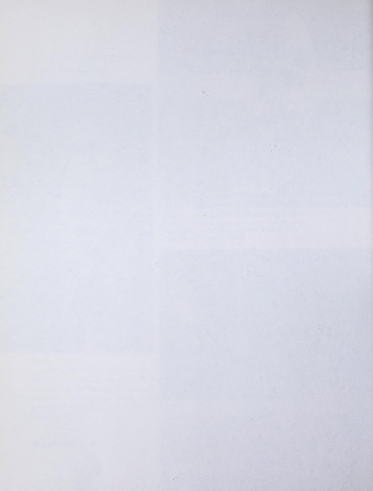
PHẦN 2: LỐI ĐÁNH TRÊN LƯỚI, GIAO BÓNG THẦN SẦU & ĐÒN ĐỘT KÍCH
— Arthur Ashe & John Newcombe
Chương 4: Khẩu Pháo Giao Bóng Sấm Sét Của Arthur Ashe & John Newcombe
Arthur Ashe — nhà vô địch US Open và Wimbledon — giải thích cơ chế sinh lực đằng sau cú giao bóng "Cannonball" trứ danh:
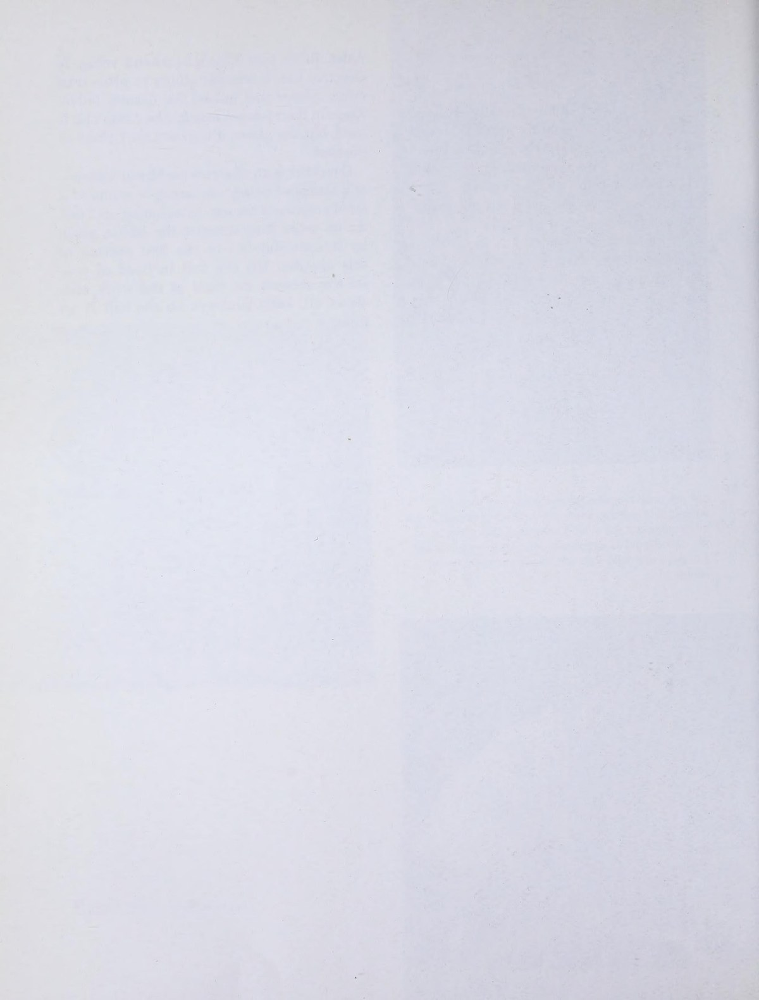
Vòm Cung Cơ Thể (The Body Arc)
Chuyên gia Bill Price phân tích: khi đưa vợt ra sau, toàn bộ cơ thể uốn cong như một cánh cung nén thế năng. Cột sống ngả nhẹ, hông đẩy về phía trước và hai đầu gối khuỵu sâu nén lò xo.
Kỹ Thuật Tung Bóng Chuẩn Xác (Joe Brandi)
Tung quả bóng lên thẳng như được đặt trên một cột thủy tinh vô hình. Bóng rơi vào vị trí góc 1 giờ phía trong sân khoảng 30cm, cho phép cơ thể đổ dồn trọng lực vào tâm quả bóng.
Cú Twist Kiểu Úc Của John Newcombe
John Newcombe giải mã cú American Twist: quẹt mặt vợt từ góc 7 giờ lên 1 giờ trên mặt bóng, khiến bóng sau khi chạm đất nảy vọt lên cao ngang vai và giạt chéo ra ngoài mang sân.
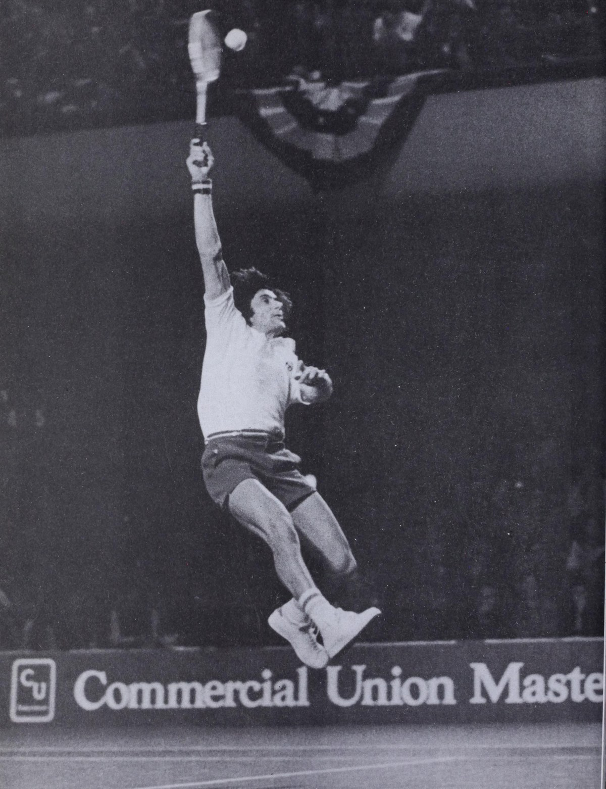
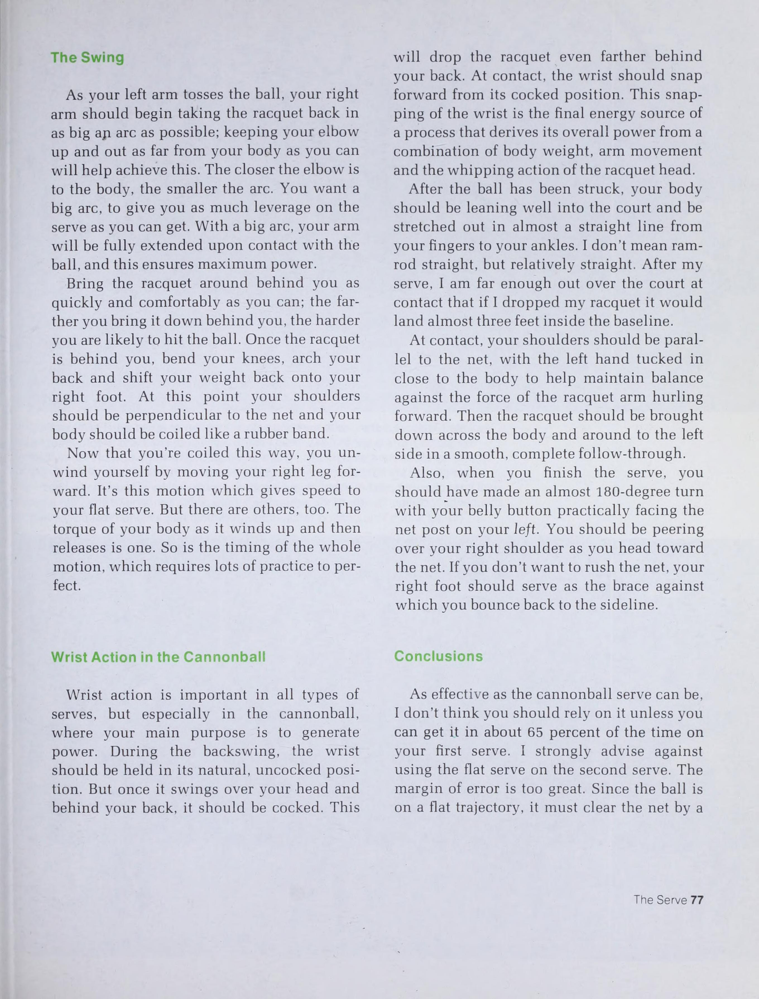
Chương 5: Bức Tường Volley Của Dennis Ralston & Roy Emerson
Dennis Ralston và Tony Trabert chia sẻ những bí quyết cốt lõi để biến đôi tay trên lưới thành một bức tường thép bất khả xâm phạm:
| Kỹ Thuật Bắt Lưới | Chỉ Dẫn Của Dennis Ralston & Roy Emerson | Hiệu Quả Thực Tế Trên Sân |
|---|---|---|
| Động tác cổ tay trên lưới (Chet Murphy) | Khóa chặt cổ tay tại thời điểm tiếp xúc, không bao giờ vẩy cổ tay để tìm lực. | Triệt tiêu toàn bộ độ rung giật khi đón các cú passing shot sấm sét của đối thủ. |
| Volley trái tay tầm cao (Bill Murphy) | Giơ cùi chỏ cao ngang vai, giữ mặt vợt ổn định trước mặt và đấm chéo xuống về phía góc sân trống. | Chuyển hóa những quả bóng lốp bổng thành cú dứt điểm ăn điểm trực tiếp sắc lẹm. |
| Cú đờ-mi volley cứu bóng sát đất (Roy Emerson) | Khuỵu sâu hai đầu gối đến sát mặt sân, giữ mặt vợt ngửa nhẹ và đón bóng ngay tích tắc khi bóng vừa nảy lên khỏi mặt đất. | Hóa giải các cú đánh chúc chân hiểm hóc khi bạn đang trên đường tiến lên lưới. |
Chương 6: Đòn Đột Kích: Cú Đập Overhead, Lốp Bóng Topspin & Bỏ Nhỏ
Những pha bóng nghệ thuật nhất trong tuyển tập được trình bày bởi các bậc thầy huyền thoại:
- Cú đập bóng Overhead của Fred Perry: Nhà vô địch vĩ đại Fred Perry nhấn mạnh việc dùng bàn tay trái chỉ thẳng vào quả bóng trên không để đo cự ly, sau đó bật nhảy scissor kick để hoán đổi hai chân trên không trung và đập bóng cắm thẳng xuống mặt sân.
- Cú lốp bóng Topspin của Rod Laver: Huyền thoại "Rocket" Rod Laver hướng dẫn cách ngụy trang một cú bạt bóng uy lực, sau đó vuốt ngược đầu vợt lên trời với tốc độ cực lớn, đưa quả bóng bay vút qua đầu người đứng lưới và cắm sâu vào góc sân cuối.
- Nghệ thuật bỏ nhỏ của Ron Holmberg: Giữ bộ chân và thân người chuẩn bị giống hệt một cú bạt bóng sâu, sau đó hãm đà đột ngột và đệm nhẹ vào đáy bóng, khiến quả bóng rơi êm như một chiếc lá rụng ngay sau mép lưới.
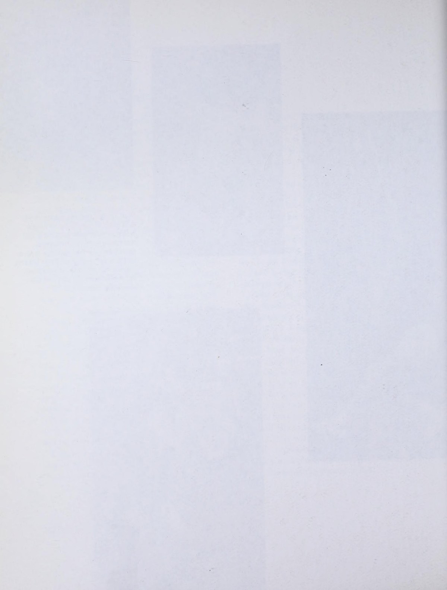
PHẦN 3: CHIẾN THUẬT ĐÁNH ĐƠN, ĐÁNH ĐÔI & NGHỆ THUẬT TÂM LÝ CHIẾN
— Charles Lundgren & Fred Perry
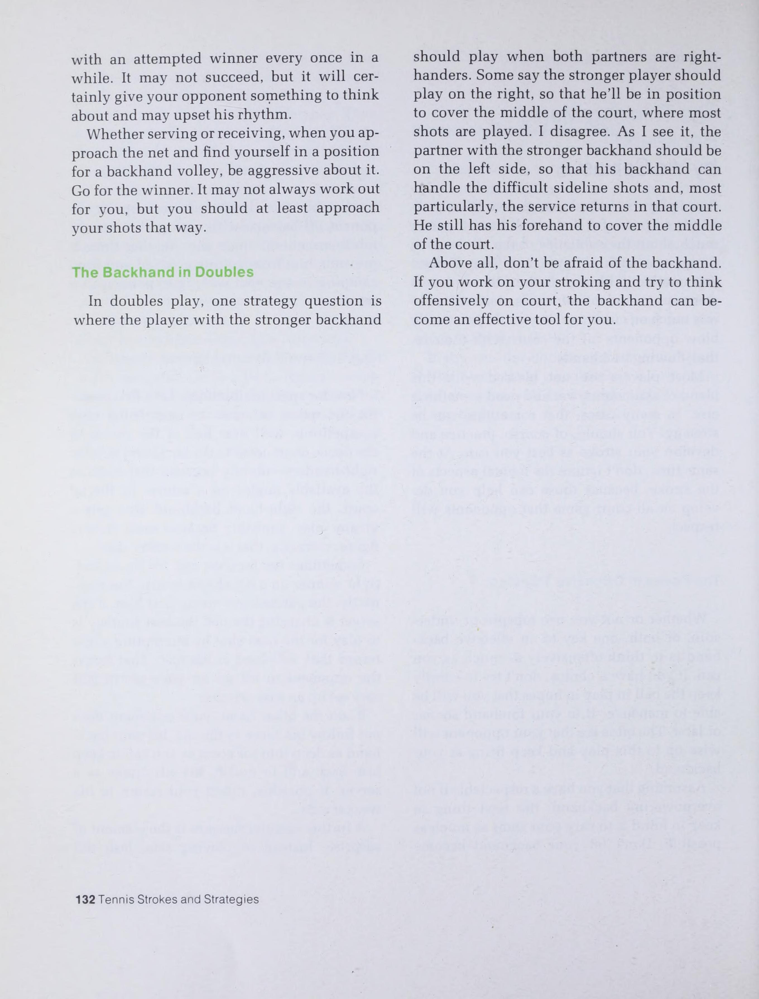
Chương 7: Tấn Công Theo Vùng Của Charles Lundgren (The Zone Offense)
Huấn luyện viên Charles Lundgren đưa ra khái niệm mang tính đột phá: chia nửa phần sân của bạn thành 3 khu vực màu sắc để đưa ra quyết định đánh bóng chính xác tuyệt đối:
Vùng Đỏ (Red Zone - Sâu Sau Baseline)
Khi bạn bị đẩy lùi sâu sau vạch baseline hơn 1.5 mét: Tuyệt đối không tung cú đánh ăn điểm liều lĩnh. Hãy đánh bóng bổng cao an toàn sâu vào giữa sân đối phương để kịp phục hồi vị trí trung tâm.
Vùng Vàng (Yellow Zone - Quanh Baseline)
Khu vực tranh chấp trung lập. Mục tiêu số một là duy trì các loạt đánh bền bóng chéo sân sâu, giữ bóng cao hơn lưới 1 mét và kiên nhẫn chờ đợi đối phương trả bóng ngắn.
Vùng Xanh (Green Zone - Trong Vạch Giao Bóng)
Khu vực tấn công dứt điểm. Khi bóng nảy ngắn phía trong sân: Lập tức bước vào đón bóng sớm, tung cú tiếp cận sâu ép góc và lao lên lưới dứt điểm bằng cú volley quyết định.
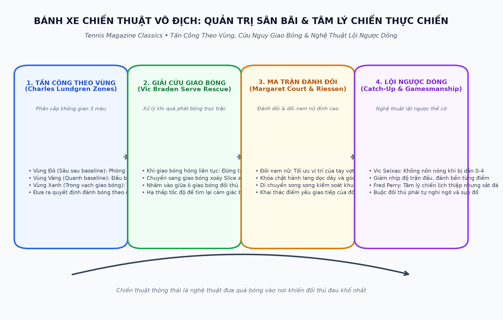
Chương 8: Giải Cứu Giao Bóng & Tâm Lý Cú Đập Overhead
Hai chuyên gia tâm lý học thể thao hàng đầu chia sẻ cách xử lý các thời khắc khủng hoảng trên sân đấu:
| Tình Huống Khủng Hoảng | Phân Tích Của Chuyên Gia | Phác Đồ Giải Quyết Tức Thì |
|---|---|---|
| Khi giao bóng liên tục hỏng (Vic Braden) | Người chơi thường nổi nóng và cố dùng sức mạnh bạt bóng mạnh hơn, khiến sai số càng nhân lên gấp bội. | Ngừng ngay ý định phát bóng phẳng ăn điểm (Ace). Chuyển sang giao bóng xoáy Slice an toàn, nhắm vào giữa ô giao bóng và hạ tốc độ xuống 70% để lấy lại nhịp điệu. |
| Nỗi sợ hãi cú đập Overhead (Dr. Allen Fox) | Khi thấy bóng lốp bổng, người chơi hoảng sợ vì nghĩ rằng cú smash bắt buộc phải ăn điểm, dẫn đến căng cứng cơ bắp. | Xem cú smash như một cú giao bóng bình thường. Nhắm đập bóng sâu an toàn vào giữa sân đối phương thay vì cố gắng nhắm sát góc chết. |
Chương 9: Ma Trận Đánh Đôi & Đôi Nam Nữ Đỉnh Cao
Huyền thoại nữ đoạt 24 danh hiệu đơn Grand Slam Margaret Court và chuyên gia đánh đôi Marty Riessen phân tích nghệ thuật phối hợp đôi:
- Góc nhìn của Margaret Court về Đôi Nam Nữ: Người chơi nữ trên lưới không nên co cụm phòng thủ. Họ phải tự tin chiếm lĩnh không gian, sẵn sàng bắt các quả volley ngang ngực và tạo áp lực thị giác trực tiếp lên người trả giao bóng đối phương.
- Góc nhìn của Marty Riessen: Người chơi nam ở cuối sân cần kiên nhẫn yểm trợ bằng những quả bóng xoáy sâu trượt thấp, tuyệt đối không được nôn nóng tung ra những cú đánh bạt bóng liều mạng qua đầu đồng đội.
- Nghệ thuật tâm lý chiến của Fred Perry (Gamesmanship): Giữ vẻ mặt tươi cười, lịch thiệp nhưng sắt đá. Khi đối thủ bắt đầu tỏ ra bực bội, hãy duy trì nhịp độ trận đấu chậm rãi và điềm tĩnh để bẻ gãy hoàn toàn sự hưng phấn của họ.
PHẦN 4: LẬP KẾ HOẠCH TRẬN ĐẤU, THỂ LỰC & BÀI TẬP THỰC CHIẾN
— Vic Seixas & John Alexander
Chương 10: Nghệ Thuật Lội Ngược Dòng Của Vic Seixas (Playing Catch-Up Tennis)
Huyền thoại Vic Seixas — nhà vô địch US Open và Wimbledon — chia sẻ kinh nghiệm tâm lý và chiến thuật vô giá khi bị đối thủ dẫn trước cách biệt lớn (ví dụ: bị dẫn 0-4 hoặc 1-5):
1. Giảm Tốc Độ & Làm Chậm Nhịp Độ
Khi đối thủ đang thăng hoa và ghi điểm dồn dập, tuyệt đối không được đánh bóng nhanh theo nhịp của họ. Hãy tận dụng tối đa 25 giây giữa các lượt bóng, chỉnh lại trang phục, lau mồ hôi và bước đi chậm rãi để hạ nhiệt sự hưng phấn của đối phương.
2. Chia Nhỏ Trận Đấu Thành Từng Điểm
Đừng nhìn vào tỷ số 0-4 hay 1-5 trên bảng điểm. Hãy tự nhủ: "Mình chỉ cần thắng điểm số tiếp theo này thôi". Tập trung 100% năng lượng vào một đường bóng duy nhất trước mắt.
3. Đổi Kiểu Đánh Làm Rối Loạn Đối Phương
Nếu những cú đánh bạt bóng cuối sân của bạn đang bị bắt bài, hãy lập tức đổi sang cắt bóng xoáy trượt thấp, lốp bóng bổng sâu hoặc chủ động lên lưới bắt volley. Hãy ép đối thủ phải rời khỏi vùng an toàn của họ.
Chương 11: Bài Tập Độc Đáo Cho Người Ghét Tập Máy Móc (Drills for Drill-Haters)
Chuyên gia Paul R. Siemon và Bob Harman thiết kế những bài tập thực chiến giàu tính thi đấu, loại bỏ sự nhàm chán của các bài tập truyền thống:
| Bài Tập Thực Chiến | Cách Triển Khai Trên Sân | Kỹ Năng Đột Phá Được Tôi Luyện |
|---|---|---|
| Đánh Đôi Bóng Ma (Ghost Doubles) | Hai người chơi đánh đơn nhưng chỉ được sử dụng nửa sân dọc (hành lang đơn) từ baseline đến lưới. | Rèn luyện khả năng kiểm soát bóng dọc dây cực hẹp và phản xạ bắt volley cận chiến trong đánh đôi. |
| Trò chơi 21 Điểm Chiều Sâu (Deep Rally 21) | Hai tay vợt đấu bóng bền từ baseline, mọi quả bóng rơi trước vạch giao bóng đều bị trừ 2 điểm. | Hình thành phản xạ đưa bóng sâu tự nhiên cách baseline 1 mét mà không cần phải suy nghĩ. |
| Bài tập Lốp Bóng & Đập Smash (Lob-Overhead Chain) | Một người đứng cuối sân liên tục lốp bóng với các độ cao khác nhau, người đứng lưới di chuyển lùi đập overhead liên hoàn 20 quả. | Nâng cao sức bền cơ vai, rèn luyện bước trượt ngang và động tác bật nhảy scissor kick dứt khoát. |
Chương 12: Bốn Chìa Khóa Bộ Chân Của Pauline Betz Addie
Huyền thoại từng 5 lần vô địch Grand Slam Pauline Betz Addie đúc kết 4 quy tắc vàng về bộ chân di chuyển:
- Trọng lượng luôn đặt trên nửa trước bàn chân: Không bao giờ đứng trên gót chân. Gót chân hơi nhấc nhẹ khỏi mặt sân để cơ thể luôn sẵn sàng bung sức lao về mọi hướng trong tích tắc.
- Bước di chuyển đầu tiên luôn là bước xoay hông (Pivot Step): Đừng bước chân thẳng về phía trước. Hãy xoay hông và xoay mũi chân ngoài về hướng bóng để nạp lực cơ học ngay từ nhịp đầu tiên.
- Các bước nhấp nhỏ trước khi tiếp xúc (Adjustment Steps): Trong một mét cuối cùng trước quả bóng, sử dụng 3 hoặc 4 bước nhấp li ti để căn chỉnh cự ly hoàn hảo nhất với mặt phẳng đánh bóng.
- Bảo vệ cơ thể và duy trì sự cân bằng: Luôn kết thúc cú đánh ở tư thế thăng bằng vững chãi, hai chân mở rộng hơn vai để sẵn sàng chuyển hướng phục hồi về tâm hình học của sân bãi.